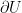
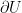

Created Friday 19 June 2020
Today's topic is Limits-Continuity of functions.
Get ready y'all cause it's about to get a bit intense.
Be sure to know your stuff about limits.
The professor then writes: the functions we will study are of the following kind:
And in particular, we will also have and (for the second one, I can't tell if he wrote n or m). He notes that these are subcases of the general function f we just wrote.
Review
If you have a function:
and
Then we have the following:

If you're anything like me, you just had a panic attack. I loosely remember this but my Calc1 professor never went into it. Well, time to digest it in depth.
As a reminder:
means 'for all'
is epsilon.
means 'there exists'
is delta
: means 'such that'
|| absolute value
Now let's digest this in full:
says that for any positive ε, there exists another positive number we shall refer to as δε. The latter is denoted by . Whatever we choose to be δε depends on what we choose ε to be. We first choose a positive ε and then we find a δε that is also positive.
Now then, we so far have the following: . Next, we read, "such that" the distance (absolute value) of f(x) - l (which is the letter L) is smaller than our chosen ε. The corresponding symbols for all of this are:
This in turn applies for all of x such that the distance (absolute value once again) between x and a is less than our chosen δε. The equation looks as such:  .
.
Putting it all together, we once again have this:
The goal now is to generalize what we just covered.
Continued
So then, let's get a little deeper into the subject.
Let's saw we have a number line like so:
------------<----------->------------
where < is point a and > is point b. We now have an open interval denoted by (a, b).
Also, let's look at this portion of the previous equation again: 
What this really means is that:
In this way, f(x) is an interval of center l (lowercase L) and radius ε. We can apply this same thought process to the following:
So we have:
Knowing these definitions, we can write the following:
Remember, the () denotes an interval here. Not a vector or anything else.
Notion of the Interval
Right before this, he draws a nice graph illustrating the limit of a function along with l, l + ε, l - ε, and so on. It's a bit hard to see so I can't really recreate the graph. Also, I'm feeling very sleepy right now. I'm going over this last video late at night before our Monday meeting.
Anyways...
Let  and there be the norm as we had previously learned with is the length of a vector. I can't quite tell what he put inside of the bars. I assume '-' is just a placeholder.
and there be the norm as we had previously learned with is the length of a vector. I can't quite tell what he put inside of the bars. I assume '-' is just a placeholder.
Definition: The open BaLL (yes, that spelling is right) in  with center a (remember, bold for vector) and radius ε > 0 is denoted by:
with center a (remember, bold for vector) and radius ε > 0 is denoted by:
The above equation is the open BaLL which is a generalization of the open interval. Also, don't forget that {} is denoting a set. Remember set builder notation?
Now we'll go over some properties of sorts.
1)
Firstly, we have the following:
2)
Next, let us step into the 2nd dimension:
When we graph this, ε is the radius of a circle formed around a. Remember, we did say that the radius is ε and that the center is a.
3)
Next, the third dimension!
We can of course also write:
Now this is quite interesting! Why? Because the equation for a sphere is as follows:
where r is the radius.
And just like how we got a circle with part 2, here ε is the radius for a sphere!
Remember when we said this was an open BaLL interval? Heh. Balls. Spheres. Round things that go bouncy bounce. Well, it's all coming full circle! Or, sphere more like it...
What Does this Mean?
Well, an open BaLL for R1 is an interval, for R2 it is an open disc, and for R3 it is an open sphere! Beyond that, it is an open hyper sphere for Rn.
Squares and Cubes
Moving onward, our professor states that we can also use squares. Also a cube in 3D space.
He states that they play the exact same role as open BaLLs.
So then, we have an open square (or cube) where we place our vector a in the center.
He says he just wants to make it clear that open BaLLs aren't the only intervals that we use.
However, we shall focus only on open BaLLs. So, I suppose this section wasn't really all that useful... Cool to know that there are alternatives at least!
More Definitions
In  a subset is called a neighborhood of a if and only if there is at least one open BaLL B with center a and radius epsilon (which we write as
a subset is called a neighborhood of a if and only if there is at least one open BaLL B with center a and radius epsilon (which we write as  ) such that .
) such that .
In case this is difficult to comprehend, I drew this nice little diagram:

In case it wasn't obvious, if we have an open BaLL wherever vector a is at that fits within U then we have a neighborhood! If it goes outside, then we do not have a neighborhood...
Examples
Now our professor wants to explore some examples.
In the above example, U is not a neighborhood! You must be wondering why this is. The reason is because a circle does not fit within a line that is U!
Also, if we place a vector on the edge (or boundary) of U then it doesn't work! We can't draw a open BaLL around it.
Now time for another definition: If  , the boundary of U denoted by  (
, the boundary of U denoted by  ( is the symbol for the partial derivative by the way) is defined as:
is the symbol for the partial derivative by the way) is defined as:
Even More Definitions
We say that is an open set in  if and only if:
if and only if:
Next definition: If , then we say that k is a closed set if and only if the complement (or in other words, is outside of k) is an open set.
Set, let's say we take the interior of A (and not the boundary) for the complement of the boundary and everything outside is the interior of A.
Definition of the Limit
Let
We say that:
{kind=link}
{kind=link}
{kind=link}
{kind=link}
{kind=link}
{kind=link}
{kind=link}
{kind=link}
{kind=link}
{kind=link}
{kind=link}
{kind=link}
{kind=link}
{kind=link}
{kind=link}
{kind=link}
{kind=link}
{kind=link}
{kind=link}
{kind=link}
{kind=link}
{kind=link}
{kind=link}
{kind=link}
{kind=link}
{kind=link}
{kind=link}
{kind=link}
{kind=link}
{kind=link}
{kind=link}
{kind=link}
{kind=link}
{kind=link}
{kind=link}